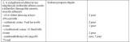

"Van-e élet a halál előtt?" - Vavyan
Fable
„Visszük a hullákat, hozzátok a halottakat!...” Ismerős a
szöveg? A Gyalog-galopp II. jelenetében hangzik el, egy nem kicsit morbid párbeszéd
részeként. Azt mondhatnánk, hogy ilyen nincs, ez tényleg vicc, kacagjunk hát, micsoda
abszurd! A Monty Python érti a dolgát!
De várjunk csak! Valami olyasmit is szoktak
mondani az okosok, hogy a legnagyobb abszurd humornak is van valós alapja. Hiszen amit
így ki lehet figurázni, azt az élet megkreálta már, bár nem ilyen körítéssel, de mégis,
van előzménye. Most sincs kivétel. Igaz, ebben az esetben előbb volt a humor, aztán
kapott észbe a
nonvirtual reality rendezője, hogy
nézd már, ebben van valami! Nosza, lássunk hozzá...
A színhely nem a messzi
Albion ködös földje, hanem mi más, mint az igazi abszurd dolgok kifogyhatatlan lelőhelye és
tesztpályája: kis hazánk, édes Magyarország! Az itteni humorzsák nem a Monty Python
valamely tagja, a rendező sem Terry Jones. Hanem az FVM egy vagy több aktakukaca,
illetve a tárcát vezető miniszter, mint a rendelkezés aláírója.
De mire kellenek
a halottak? Nem fogjátok elhinni: egy vidékfejlesztési támogatás
elnyeréséhez!
Amint az MNO
beszámolt róla, az egyik
kisalföldi település, Enese pályázna egy, a falu időseit szállító kisbusz megvásárlására,
de a jogosultság elbírálásának van egy kis akadálya: a támogatási rendelet idei, április
24-i változása szerint, ha a falu nem tud felmutatni legalább évi 10 halottat, akkor a
sikeres pályázathoz szükséges pontok száma csökken...
Megnéztem a kérdéses
rendeletet, hát elég
szép.
Ez még nem az igazi, ezek a módosítások, nem is túl izgalmasak. Viszont a
melléklet! Az a csemege, mert
abban vannak az értékelési pontok. Ki is emelem nektek ide a kérdéses részt.
Mint látható, bár a táblázat kicsit
elcsúszott, 1 pontot ér a 10 halott. Viszont ha a születések száma 5-nél kevesebb, akkor
az még 2 pont! Tehát, ha fogynak, mint a tudós macskája, akkor kaphatnak
támogatást.
Röhejes? Az. Tiszta gyalog-galopp, speciális
nemzeti agyonvágta az élet rögös
mezején. Viszek bele én is egy kis humort, mert oly jó kedvem kerekedett: ha netán több
minibusz kell, sőt sok, akkor tessék elérni a bűvös hatmilliót,
másoknak már bevált a trükk...
Méghogy Tc-t szapulják az
irtó kemény hangvételű, sokakat "kiakasztó" véleménye miatt...
Nos, hivatalos helyeken lekörözik őt, simán. Akarnál élni? Előbb dögölj meg. A szomszéd is,
tehenestül. Sőt, meg se szüless, mert az még rosszabb a pályázaton, mínusz 2 pont a
rizikó!
Kis vidékfejlesztési ösztönzés, igazán morbid módra. A Monty Python-t is
lemosták Abszurdisztán dögkeselyű bürokratái.
Kedves pályázók! Lehet jönni, adjuk
a zsét!
De előbb...
hozzátok a
halottakat!...
Kék eget!
BiG